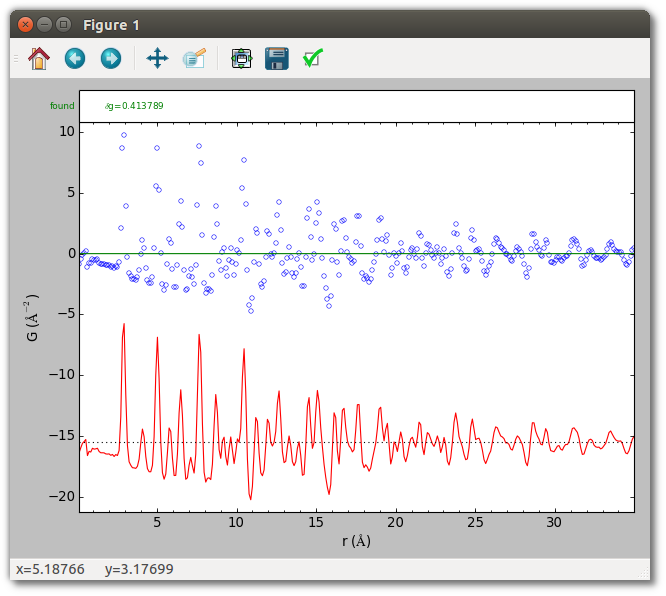

Peak extraction of a single peak¶
This introductory example shows how to extract the nearest-neighbor peak of an X-ray PDF for crystalline (FCC) silver powder with experimentally determined uncertainties. It demonstrates basic input/output with SrMise, how to set the region over which to extract peaks, and how to automatically estimate a linear baseline.
First, plot the data without performing peak extraction. The first argument must be either a PDF (as here) or a .srmise file (described later) saved by SrMise.
srmise data/Ag_nyquist_qmax30.gr --no-extract --plot
This should result in an image very similar to the one below. The top shows the experimental data in blue. The bottom shows the difference curve, which is just the PDF itself since no baseline has been specified (it is identically 0), and no peaks have been extracted.

By default peak extraction is performed over the entire PDF, but often only
peaks in a particular region are of immediate interest. In this case the
nearest-neighbor peak near 2.9 Å is well separated from all other peaks, and
performing peak extraction from around 2 Å to 3.5 Å will be sufficient. To
restrict peak extraction to this interval use the --range option, which
accepts a pair of values.
srmise data/Ag_nyquist_qmax30.gr --no-extract --plot --range 2 3.5
The PDF baseline of a crystal is linear, and a reasonable crystal baseline can
often be automatically estimated. To estimate baseline parameters
automatically, specify the type of baseline to use with the --baseline
option. Here we specify a polynomial of degree 1, which is at present the only
baseline for which SrMise provides automatic estimation. Since the results of
peak extraction are conditioned on the baseline parameters, it is a good idea to
see whether they are reasonable.
srmise data/Ag_nyquist_qmax30.gr --no-extract --plot --range 2 3.5
--baseline "Polynomial(degree=1)"

The estimated baseline looks reasonable, so it’s time to perform peak extraction.
By default srmise performs extraction when run, so simply remove the
--no-extract option.
srmise data/Ag_nyquist_qmax30.gr --plot --range 2 3.5
--baseline "Polynomial(degree=1)"

The plot shows the fit to the data and difference curve. The top inset shows a vertical marker at the position of the extracted peak. The console output indicates the nearest-neighbor peak is located at 2.9007 ± 0.0019 Å, with width (as full-width at half-maximum) 0.2672 ± 0.0049 Å, and intensity 9.8439 ± 0.1866. (Results may vary slightly by platform.) Since this PDF has reliable uncertainties, the reported parameter uncertainties are quantitatively sound. Note also that these parameters are for a Gaussian in the radial distribution function (RDF) corresponding to the experimental PDF, rather than the Gaussian divided by radius which is the actual function being fit to the PDF.
SrMise has two basic formats for saving data. The first are .srmise files,
which record all information about the parameters and results of peak
extraction. These files may be loaded by srmise and in Python scripts. The
second are .pwa files, which are intended as a human readable summary, but do
not contain enough information to reproduce peak extraction results. These
may be saved with the --save filename.srmise and --savepwa filename.pwa
options.
The script gives results identical to the commands above, and also saves both a .srmise and .pwa file in the output directory. Verify this by running it.
python extract_single_peak.py
Script (extract_single_peak.py)¶
#!/usr/bin/env python
##############################################################################
#
# diffpy.srmise by Luke Granlund
# (c) 2015 trustees of the Michigan State University.
# All rights reserved.
#
# File coded by: Luke Granlund
#
# See LICENSE.txt for license information.
#
##############################################################################
"""Example of extracting an isolated peak from a crystalline PDF.
This example shows how to extract an isolated peak from a simple crystalline
PDF with accurate experimentally-determined uncertainties using a crystalline
baseline estimated from the data. This is the simplest use case
for diffpy.srmise, and covers initializing diffpy.srmise, defining extraction
parameters, running peak extraction, and saving the results.
This script is equivalent to running
srmise data/Ag_nyquist_qmax30.gr --range 2. 3.5 \
--baseline "Polynomial(degree=1)" --save output/extract_single_peak.srmise \
--pwa output/extract_single_peak.pwa --plot
at the command line.
"""
import matplotlib.pyplot as plt
from diffpy.srmise import PDFPeakExtraction
from diffpy.srmise.baselines import Polynomial
from diffpy.srmise.applications.plot import makeplot
def run(plot=True):
## Initialize peak extraction
# Create peak extraction object
ppe = PDFPeakExtraction()
# Load the PDF from a file
ppe.loadpdf("data/Ag_nyquist_qmax30.gr")
## Set up extraction parameters.
# For convenience we add all parameters to a dictionary before passing them
# to the extraction object.
#
# The "rng" (range) parameter defines the region over which peaks will be
# extracted and fit. For the well isolated nearest-neighbor silver peak,
# which occurs near 2.9 angstroms, it is sufficient to perform extraction
# between 2 and 3.5 angstroms.
#
# The "baseline" parameter lets us define the PDF baseline, which is
# linear for a crystal. If a linear baseline is specified without
# numerical parameters diffpy.srmise attempts to estimate them from the
# data, and this is usually sufficient when peaks do not overlap much.
kwds = {}
kwds["rng"] = [2.0, 3.5]
kwds["baseline"] = Polynomial(degree=1)
# Apply peak extraction parameters.
ppe.setvars(**kwds)
## Perform peak extraction
ppe.extract()
## Save output
# The write() method saves a file which preserves all aspects of peak
# extraction and its results, by convention using the .srmise extension,
# and which can later be read by diffpy.srmise.
#
# The writepwa() method saves a file intended as a human-readable summary.
# In particular, it reports the position, width (as full-width at
# half-maximum), and area of of extracted peaks. The reported values
# are for Gaussians in the radial distribution function (RDF) corresponding
# to this PDF.
ppe.write("output/extract_single_peak.srmise")
ppe.writepwa("output/extract_single_peak.pwa")
## Plot results.
# Display plot of extracted peak. It is also possible to plot an existing
# .srmise file from the command line using
# srmise output/Ag_singlepeak.srmise --no-extract --plot
# For additional plotting options, run "srmiseplot --help".
if plot:
makeplot(ppe)
plt.show()
if __name__ == '__main__':
run()